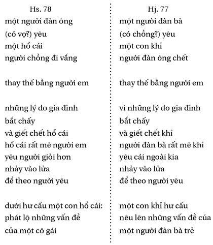
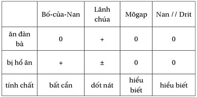

Chương 12
Trong tất cả các con thú mà các nhân vật (ít hay nhiều tưởng tượng) có thể mang lốt, thì con hổ thường hay trở đi trở lại nhiều hơn cả trong các truyện kể Sre cũng như Giarai, và đấy là một trong những “mặt nạ” duy nhất có thể do đàn ông hoặc đàn bà mang - trăn bao giờ cũng là đực, gà lôi là cái, v.v…
Tôi sẽ lướt qua nhanh hai câu chuyện Sre ngắn, chúng nối liền các sömri mà chúng ta đã gặp (chương 9) và các hổ cái hấp dẫn sẽ thu hút chúng ta với những chuyện kể, càng lúc càng kỳ lạ đến điên rồ, về Moumih (Sre) và về Nan (Giarai), anh chàng này là thợ săn chân chính.
Hai anh em Blöi và Blön là những người-hổ; họ đi săn cùng với bà ngoại Pang Ting của họ [pang: tổ tiên, ting: săn] - Họ bắt được một con nai; bà ngoại muốn ăn ngay - “Bà ơi, đừng làm thế; bà phải lột lốt hổ ra đã; nếu bà ăn sống, vẫn mặc lốt như thế, thì bà sẽ mãi mãi là hổ đấy!” - Hai anh em lột lốt hổ, nhưng bà già thì thành hổ mãi - Blöi và Blön cột bà lại để bà không gây hại và mài nhẵn hết móng vuốt của bà.
Blöi và Blön cưới chị em Mous và Moui, các nàng không biết họ là sömri - Họ đi lấy nước; một con hổ cái vồ họ - đấy chính là bà già, đã bứt đứt dây; bà đập vỡ các quả bầu, bứt các vòng kiềng; nhưng không có móng và không còn răng, bà không làm các cô nàng đau lắm - Blöi và Blön chạy lại gỡ cho các nàng - Gia đình vợ muốn đuổi họ đi - Họ đền tội bằng cách giết một con lợn rừng phá ruộng (Hs. 121).
Người ta đã nói rõ với tôi là chuyện đó xảy ra ở vùng người Raglai, nói cách khác, theo người Sre văn minh này - là những người bán hoang dã.
Một cô gái rủ các bạn giã gạo ở ruộng - Buổi tối, cô ở một mình - Một người đàn bà-hổ xuất hiện (một trong các cô bạn của cô), ăn thịt cô, chỉ còn lại xương, lấy chăn đắp lại - Sáng hôm sau, các cô bạn trở lại làm việc; người anh của cô gái khám phá ra các xương; anh ta ở lại đấy - Buổi tối, người ta dọn cơm; người anh nhìn xem có đủ bát cho mọi người không, trong một bát anh ta thấy có thịt, do đó anh ta nhận ra người đàn bà-hổ, anh giết chết... (Hs. 37).
Câu chuyện Sre về nàng Moumih tóc dài du nhập một mẫu nhân vật hư cấu mới, hổ cái, thuộc họ hổ, mang lốt một cô gái và bẫy một chàng trai bằng nhan sắc của cô.
Thân [dịch theo tên riêng Sre] và người anh của cậu đi sâu vào rừng để tìm trâu. Họ nghỉ lại trong một ngôi nhà không quen biết, có một cô gái đón họ; người anh muốn ở lại đó, ngủ với cô gái mà anh rất thích. Thân đi về một mình, cùng với đàn trâu. Người anh ngủ với nàng Moumih.
Đêm đó, họ nghe tiếng chiêng ở làng bên cạnh. Moumih bảo là người ta làm lễ hội; kỳ thực đấy là họ khóc người của họ bị bố mẹ Moumih ăn thịt; bố mẹ Moumih về. Moumih xấu hổ. Bố mẹ Moumih muốn bắt anh chàng, anh cố chạy trốn lúc đang đêm; những cái lục lạc gắn trên tấm dồ khiến bọn hổ theo được anh, chúng bắt được anh và ăn thịt. Moumih trách bố mẹ, cô muốn cưới cậu em. Họ mang sính lễ đến cho bố mẹ Thân; Moumih ở lại với Thân, đi theo anh khắp nơi. Moumih rất đẹp, mái tóc rất dài.
Bố mẹ Thân ác cảm về cuộc tình duyên này. “Khi con bắt chấy cho nó, thì con bóp cổ nó luôn!” Thân sống với Moumih một thời gian, họ cùng làm rẫy chung. Thân rất thích cô; cô thật đẹp. Nhưng anh phải giết cô, cô là một con hổ cái, và anh của Thân đã chết. Cho nên một ngày nọ, anh bắt chấy cho cô, rút thanh gươm ra, chặt đứt phăng đầu cô. Thật đau khổ, tóc cô đẹp quá. Anh chôn xác cô, cái đầu riêng một nơi, thân hình một nơi khác.
Về sau, người chú của Thân đến thăm anh; họ nói chuyện nàng Moumih tóc dài. Người chú đòi xem nơi anh đã chôn cô. Thân dẫn chú ra, đào cái đầu lên, nó vẫn còn sống nguyên. “Sao anh lại giết em, anh Thân, em yêu anh!” Đầu Moumih nhảy lên trên vai Thân và dính luôn vào đó đến nỗi bây giờ Thân có hai đầu; anh ta hoảng sợ.
Gần đó, bọn trẻ chăn trâu; một số cậu trèo lên cây xoài và lay cho các trái chín rụng xuống. Thân muốn nhặt xoài, nhưng cái đầu mới khiến anh vướng víu. Anh bèn quay đầu mình về phía chiếc đầu kia nói với Moumih: “Tôi sẽ trèo lên cây để hái xoài, cho hai ta ăn; nếu em cứ bám lấy tôi, tóc em sẽ vướng cành cây mất...” Nghe vậy, đầu Moumih nhảy xuống đất. Thân, được giải phóng, hái xoài, anh ta ném vào trong bụi gai. Moumih muốn đi nhặt xoài, tóc cô mắc vào gai. Lơi dụng tình thế đó, Thân chạy thoát, anh chạy trốn đến rẫy của bố mẹ mình, xin họ giấu anh dưới một chiếc gùi lớn; anh sợ Moumih đuổi theo. Quả là Moumih đã tự giải thoát bằng cách hy sinh bộ tóc dài; cô đuổi theo dấu chân anh đến tận rẫy, gặp bố mẹ Thân đang đốt một đống cỏ. “Anh Thân đâu rồi, con rất yêu anh ấy? - Trong khi chạy trốn nó sợ quá đến nỗi ngã vào đống lửa này, cháy mất rồi.” Đầu Moumih nhảy vào lửa, cô cháy lên. Thân chui ra khỏi chỗ trốn; cô ta trông thấy anh. “Ôi, Thân, anh chẳng muốn tôi! Được rồi, tôi sẽ bắt tất cả hậu duệ anh, tôi sẽ là con đỉa hút máu, con rận cắn, con muỗi đốt!” (Hs. 78).
Người nghe huyền thoại này có thể đã để ý, mà chẳng hề ngạc nhiên, rằng người em phải mạnh hơn người anh và ông chú đóng một vai trò người trung gian - làm mối (hơn nữa đó là một ông nhạc tiềm tàng). Nhưng phải luôn nhớ cả một tổng thể văn hóa, vượt ra rất xa ngoài một tộc người, để có thể thiết lập những gắn kết và nhận ra những hằng số; sau đây là hai ví dụ:
- Chiếc đầu của Moumih (đã bị giết chết và chôn cất) không thể không nhắc nhớ đến Đầu-ma và nhất là một tín ngưỡng phổ biến rộng rãi ở Đông Nam Á, về một người đàn bà ma lai, ban đêm chỉ có cái đầu nối với dây ruột lòng thòng của mình (như mái tóc của Moumih) đi lấy mạng người bằng cách hút máu của họ (và quả là Moumih, sau khi chết, sống bằng máu).
- Toàn bộ chủ đề của thiên huyền thoại Sre phải được gắn với một văn bản Giarai đã thấy trên kia (không người Sre hay Giarai nào có thể làm được việc này, vì thiếu thông giao, nhất là trên bình diện này):

Huyền thoại đặt vấn đề hơn là giải thích, định vị hơn là giải quyết. Hai văn bản nêu lên một vấn đề về người đàn bà; ở đây bao giờ người đàn bà cũng là tính cách trội, người anh thì không vững, người em thì yếu đuối và yêu một cách nhợt nhạt (gắn hai huyền thoại lại gần nhau xác nhận những nghi ngờ của tôi về cái “đức” của người em ở Hj. 77 ). Là Sre hay Giarai, người đàn bà cũng được trình bày như là bị thất vọng vì hoàn cảnh gia đình của mình; một bên nàng muốn thoát ra khỏi điều kiện “hổ” của mình và tình yêu chân chính của một người đàn ông có thể giải thoát cho nàng, một bên khác nàng thoát khỏi những người mà nàng không yêu. Cả hai đều yêu người mà con tim nàng hướng tới: ra ngoài cái môi trường “tự nhiên” của nàng, và cho đến hủy diệt.
Hướng đi, bất ngờ, của phác thảo phân tích này có thể dẫn chúng ta đến một cuộc chú giải văn bản cổ tế nhị, thật xa một thứ chủ nghĩa tâm lý không có bối cảnh xã hội cũng như một thứ chủ nghĩa cấu trúc không có chủ đề để mà suy nghĩ. Tìm hiểu xem vì sao một điều gì đó lại được nói theo một cách nào đó dẫn đến chỗ khám phá, dưới vẻ bề ngoài vô can của huyền thoại, trí tưởng tượng được nuôi dưỡng bằng những gì, nó thao tác ra sao trong khi biến đổi và tái tạo, và vì sao nó lại làm như vậy. Bắt chước những “ý tưởng cố định” lại có những “hình ảnh cố định” (hay “nặng”) mà sự lặp lại, (quyển sách này đã cố tránh làm nhẹ đi), là dấu hiệu trọng lượng của chúng. Lối đi qua cõi mơ tưởng này, trong số những lối khác, trong khu vực có mật độ cao này, phải chỉ ra, ở bên kia cái được nói ra rõ ràng và cái xảy ra trong cuộc sống hằng ngày, rằng dân tộc Giarai không chỉ tạo thành một xã hội thuộc loại “điều hòa”; nó còn chứa những điều khác nữa bên trong, một vũ trụ cảm giác và ý niệm, không để cho ta dễ dàng xuyên thấu, và nhất là nó lại tự che giấu điều ấy đối với chính nó, như chúng ta vẫn làm trong các giấc mơ của mình. Ta hãy đi sâu hơn nữa vào rừng, ở đó có những con hổ cái khác đang chờ chúng ta.

Bố-thằng-Nan đi rình trên một chiếc chòi, cạnh sông Tul. Mẹ-thằng-Nan ở nhà. Đêm đó, một con hổ lởn vởn quanh làng, tìm thịt để mà ăn; nó kêu: “Krok krok cắn!” Người đàn bà hét lên với nó: “Để cho mẹ-thằng-Nan yên nào, đi mà cắn vào mông bố-thằng-Nan trên cây bên sông Tul ấy!” Con hổ nghe thấy, nó đi tìm con mồi ấy và nó cứ lặp đi lặp lại “sông Tul sông Tul” để khỏi quên. Nó vấp một cái gốc; lập tức không sao còn nhớ được phải đi đâu nữa. Nó quay trở lại làng, nó lại nghe tiếng mẹ-thằng-Nan. “Sông Tul sông Tul”.
Trên cây, bố-thằng-Nan rình đã chán rồi, ông muốn ngủ; ông dặn tất cả các đồ vật của mình: “Này cung, tên, kiếm, lao, ống điếu, lửa, mền! Hễ có việc khẩn cấp thì đánh thức ta dậy nghe!” Con hổ đến. Cung đánh thức bố-thằng- Nan; ông ném nó xuống đất. Rồi đến tên, kiếm, lao, ống điếu, lửa đánh thức ông; ông cũng ném tất. Cuối cùng còn cái mền, ông cũng ném luôn. Nhưng ông thấy lạnh, ông trèo xuống lấy mền, thế là giáp mặt với con hổ. Hai bên nắm lấy nhau, đánh nhau, cho đến rạng sáng. Lúc đó một con chim hót: “Bái dóp nó đi, bái dóp nó đi!” 1 Bố-thằng-Nan hiểu và định làm theo. “Đừng có chơi cái trò đó!” Hổ trách ông. Bố-thằng-Nan buông ra. Hổ lại bóp nát dái ông ta; ông chết ngay. Hổ ăn thịt ông, chỉ để lại cái đầu, nó mang về cho mẹ-thằng-Nan. “Nếu thằng Nan khóc, bà chỉ cần cho nó món óc này, nó sẽ ăn đấy!” Mẹ-thằng-Nan chế thuốc độc củ nâu để cho hổ uống; hổ chỉ hơi say. Sợ bị ăn thịt, mẹ-thằng- Nan định đi trốn cùng với con; bà lấy kéo đâm vào vách tre cố chọc một cái lỗ để thoát ra, hổ đứng ở cửa. “Bà làm gì đấy, mẹ-thằng-Nan? - Tôi đập cái sọ để lấy óc.” Trước khi thoát đi bà bảo tất cả các đồ đạc: “Này lửa, sàn nhà, rìu, dao quắm, chày, trống, chiêng, ché, nồi, bầu, nếu hổ gọi ‘ơi mẹ-thằng- Nan’ thì trả lời nó: tôi ở đây!” Nhưng bà quên dặn bếp.
Hết say thuốc độc, hổ gọi mẹ-thằng-Nan; củi trả lời nó. Nó nhảy lại và va đầu vào đó. Nó đâm đầu vào tất cả đồ vật trong nhà như vậy, cho đến khi bếp bảo nó: “Hãy trả cho tôi rồi tôi sẽ nói cho mà nghe! - Trả gì nào? - Dọn sạch cho tôi!” Hổ dọn bếp thật sạch. Bếp bèn bảo nó: “Mẹ-thằng-Nan chạy trốn rồi, bà ở nhà anh chị em bà ấy.” Hổ đuổi theo, gặp bà. “Ơi mẹ- thằng-Nan, đưa thằng bé cho tôi nào, tôi muốn bế nó! - Chờ một chút, tôi rửa cứt cho nó đã!” Mẹ-thằng-Nan đốt cháy rực một hòn đá to. “Nhắm mắt lại, mở miệng to ra, ta sẽ ném thằng Nan vào cho!” Hổ nuốt cả hòn đá cháy rực và toi mạng.
Bấy giờ mẹ-thằng-Nan đã được yên, Nan lớn lên, thả diều và chơi quay. Nó hay đánh nhau với bọn bạn. Người làng bảo nó: “Đi mà trả thù cho bố mày còn hơn, ông ấy bị hổ bắt đấy!” Về nhà, nó hỏi mẹ: “Bố đâu rồi? - Ông ấy chết lâu rồi - Vì sao chết? - Chết bệnh - Không đúng! Nói cho con biết sự thật, nếu không con sẽ đánh mẹ đấy! - Hổ bắt bố, con ạ.” Nan mài kiếm; một con ruồi đậu lên, nó bị cắt làm đôi. Nan rủ một người bạn cùng đi. Cả hai đi vào rừng sâu, rừng có hổ, có những dấu chân hổ rất to. Anh bạn cùng đi sợ. “Bạn ơi, tôi về thôi, tôi sợ quá. Hãy đổi đồ đạc của chúng ta cho nhau đi” [trường hợp họ bị chết, những đồ đạc ấy được đặt trên mộ]. Họ đổi ống điếu, khố, chăn cho nhau, nhưng Nan không chịu đổi kiếm.
Nan còn lại một mình. Cậu đi đến hang hổ; có hai lối vào, cậu chặn kín một lối, còn lối kia cậu đốt củi cho bốc khói. Bọn hổ đi ra, từng con một; Nan chém chúng bằng kiếm. Chúng chết hết, chỉ còn lại hai “người đàn bà” [dua cô bönei] - một con hổ cái và một người đàn bà, nhưng không thể biết ai là hổ cái, ai là đàn bà, cả hai đều mang dạng người. Nan chém, cậu giết chết người đàn bà; còn lại hổ cái. Nó rủ Nan hái quả xoài; Nan tưởng đó là một người đàn bà. Dẫu vậy, cậu trèo lên cây mà vẫn cầm theo kiếm và khiên. “Bỏ cái ấy xuống đất đi!” Hổ cái bảo. Nan nghe lời. “A, lần này thì mày chết thôi, Nan!” Người đàn bà rùng mình, trở lại thành hổ, nhảy lên để vồ Nan, rượt theo Nan trên cây xoài. “Phoo yang, một trái xoài hãy mở ra, cho ta chui vào!” Nan chui vào trong một trái xoài; một con quạ bay qua, hái quả xoài, cặp trong mỏ; con hổ nhảy theo, chỉ đớp được cái lông đuôi. Quạ thả rơi quả xoài xuống nước, một con cá đớp lấy. Con hổ vẫn đuổi theo, cố đớp lấy con cá, chỉ cắn được cái đuôi. Nó bèn đứng bên bờ nước, tìm con cá mất đuôi.
Ngày hôm đó, bác thợ săn đi săn. Ông đến bên bờ sông, ở đấy có một người con gái rất đẹp; ông ngắm thỏa thích rồi đi kể lại với lãnh chúa. “Nàng đẹp như thế nào? - Ôi, lãnh chúa, đẹp hơn cả vợ của ngài!” Lãnh chúa đến bờ sông. “Cô làm gì đấy, hỡi cô gái? - Tôi chờ con cá của tôi, con cá cụt đuôi; nếu ông tìm được cho tôi, tôi sẽ cưới ông - Ồ, đồng ý ngay!” Lãnh chúa huy động mọi người trong làng, ngăn nước lại, đánh thuốc. Bao nhiêu là cá chết; lãnh chúa đem nhiều cá, đưa cho người đàn bà xem; chẳng con nào vừa ý. Ông ta bèn cắt đuôi một con cá và đưa cho cô. Cô [trong văn bản: römung, hổ (cái)] vồ lấy, nhai ngấu nghiến. “Câm cái mồm mày rồi nhé, Nan, ta nhai mày!” Rồi cô về ở với lãnh chúa.
Sáng hôm sau, Mẹ Rú và Drit ra xem có còn lại con cá nào bị thuốc hôm trước. Họ tìm thấy một con cá không có đuôi (con cá mà hổ cái cố tìm). Mẹ Rú bỏ vào gùi và phủ lên một bó lá to bản. Trên đường về, họ gặp hổ cái. “Các người đi đâu đấy? - Đi tìm cá chỗ nước bị suốt; nhưng chẳng tìm được gì cả.” Hổ cái nhìn vào gùi, dỡ ra nhiều lớp lá, không tìm được gì. “Lá này làm gì nhiều thế? - Để gói cơm cho Drit.”
Mẹ Rú và Drit ở nhà; họ sắp nấu con cá; Drit mổ cá, bên trong có một quả xoài. Drit để ra một bên. Hai bà cháu ăn cá. Một giọng nói xin được cùng ăn; đấy là Nan đã chui ra khỏi quả xoài và ngồi cùng họ. Hôm đó, Nan cùng chơi diều với bọn trẻ trong làng. Hổ cái đi qua đó nghe gọi: “Nan! Nan!” Nó tự bảo: “Nó còn sống đây, mà ta đã ăn nó rồi kia mà!” Nó bảo Nan: “Này bạn Nan, tối nay đến ngủ với ta nhé! - Đồng ý!” Nan đến. Hổ cái đang ngủ; Nan lấy một nô lệ của lãnh chúa, cho ngủ cạnh hổ cái; rồi cậu ta chuồn. Hổ cái thức dậy, ăn thịt người nô lệ, tưởng đó là Nan. Nó chỉ để lại cái đầu, mà nó vứt trong chuồng gà của lãnh chúa.
Nó vẫn nghe người gọi Nan! “Ta đã ăn thịt nó rồi, mà Nan vẫn còn, lúc nào cũng Nan!” Nó lại mời Nan. Nó vẫn lại ăn thịt một người nô lệ nữa lúc tảng sáng. Nan vẫn cứ là Nan. Lặp lại nhiều lần như vậy. Chuồng gà của lãnh chúa đầy những đầu người; lãnh chúa có nhiều nô lệ đến nỗi ông ta không nhận ra.
Hôm đó, Hổ cái [trong văn bản: Römung bönei, Hổ đàn bà] yêu cầu lãnh chúa gọi Nan và Drit đến để họ khiêng nó ra sông, nó muốn tắm; ở đấy, nó rùng mình và lại trở thành hổ cái. Nó nhảy tới vồ Nan, Drit đánh nó; nó vồ Drit, Nan đánh nó. Cuối cùng, họ giết chết nó. Họ trở về nhà lãnh chúa. “Vợ ngài, chúng tôi đã giết chết, thưa lãnh chúa, nó là một con hổ cái - Lũ khốn nạn! Giết vợ ta! - Ngài có đếm các nô lệ của ngài không?” Quả nhiên, ông ta đã không đếm. Lãnh chúa đi xem chuồng gà. “Ta không trách các ngươi nữa; chắc chắn rồi nó sẽ ăn thịt đến lượt ta!” (Hj. 56).
1 Nguyên văn: écrouille-lui les cases! J. Dournes đã tạo ra một kiểu nói lái tiếng Pháp, đúng ra phải là écrase-lui les couilles, bóp dái nó đi! - ND.
Tôi không dừng lại ở các chi tiết về cấu tạo dù chúng là quan trọng: chức năng của lời nói, lối ghi nhớ bằng lặp lại, cái quên, và cả kiểu nói lái mà người Giarai rất chuộng. Tôi cũng kể qua các đồ vật mang tính bảo trợ, có danh sách riêng cho người nam hay người nữ (cũng như các đồ vật mà họ phải ghi nhớ, được kể ra trong lễ “thổi tai”). Tôi tập trung chú ý vào các nhân vật có vai trò đặc biệt trong huyền thoại này.
Bà mẹ của Nan, vợ người thợ săn (ông không phải là một người
mögap
chân chính, mà là một tay tài tử vụng về), ở trong nội giới trong khi chồng bà ở ngoại giới - mô hình kinh điển; nhưng đối với ông, bà giống như một con “hổ cái”: ông có bị ăn thịt, không có gì quan trọng (có thể bà mong như vậy), cái mà bà cần giữ là đứa con; bà chẳng cần gì chồng (đó là một điều khá Giarai!). Dẫu sao vai trò nhân vật của bà, là người mẹ (ban sự sống) hơn là người vợ, là thứ yếu, vừa đủ cho sự sống còn của Nan; bà chống lại hổ cái, người vợ (gây ra cái chết) chứ không phải người mẹ.
Còn về hổ cái, văn bản đã khá rõ để không còn gì nhập nhằng (chính người vợ ở nhà lại nhập nhằng, dửng dưng đối với chồng và mạnh hơn hổ); tùy theo đối tượng nhìn thấy bà, bà là bönei , người đàn bà, nếu bà hiện ra dưới cái lốt đó, hay römung , hổ (cái), nếu bà trở lại nguyên dạng; trong câu chuyện (khách quan) bà là römung bönei, hổ đàn bà, chứ không phải hổ cái ( römung ania ), con hổ cái mà bà vốn là thế. Là kẻ sống sót duy nhất sau cuộc tàn sát (trong đó Nan đã giết nhầm người đàn bà mang dáng hổ, vài cô gái-rừng sống với hổ) nó là kẻ ăn thịt người kinh khủng. Như vậy nó thuộc loại bönei blao , “những người đàn bà độc thân”, sống một mình (đôi khi người ta nói: trên một hòn đảo), không có đàn ông trừ những nạn nhân bị các nàng “a-ma-zôn” này mê hoặc dùng họ vào việc gây giống (chỉ tạo ra nữ thôi), rồi giết họ đi, như những con bọ ngựa cái, bằng cách nghiến đứt cơ quan sinh dục của họ trong những âm hộ có răng của mình.
Dù rất hấp dẫn, con hổ cái của chúng ta vẫn không phải là trung tâm của huyền thoại này mà chính người Giarai gọi là “chuyện chàng Nan” (người kể chuyện là một ông già chuyên đi đặt bẫy, ở làng Pa). Cho nên phải chú ý về phía nam. Người bố của Nan chẳng có gì đáng nói, ông mögap này chỉ đóng vai phụ (nhưng sẽ có ích cho chúng ta), lãnh chúa như thường lệ vẫn ngu đần và dâm dục, Nan thì khác. Khi vừa ra khỏi quả xoài, cậu ta đã tỏ ra là người tương đồng với các cô gái-rừng, mà ta đã gặp, và với Drit, sống ở nhà Mẹ Rú. “Nan mãi mãi là Nan” (= bất tử) tái hiện một công thức-bản sao của chu trình Drit (xem Hj. 8 ). Bốn nhân vật nam này có thể được trình bày như sau:

Điều này khiến Nan không chỉ là một người ngang hàng với mögap , mà là một siêu- mögap , cũng như Drit, là người, một lần nữa, được ghép đôi với các cô gái-rừng ở chỗ nào cũng thoải mái, trong tất cả các tình huống.
Khi con người không được đặc biệt như Nan-Drit, thì rừng làm cho họ sợ; một người đàn bà (hay hổ cái, ai mà biết được) ở trong rừng, đấy là nỗi sợ “được bình phương lên”; bà ta hút hết không khí, máu, tất cả sự sống. Chỉ còn cách giết chết bà, để tránh rơi vào những quyến rũ và móng vuốt của bà. Đấy là điều ta sẽ thấy trong một câu chuyện khác - gần với câu chuyện trước, dù là do một người thuộc một tiểu nhóm khác (nghĩa là chủ đề này có ở khắp nơi) - câu chuyện sẽ là mối dây nối liền với chương tiếp sau và các bi kịch của nó.
Lãnh chúa ra lệnh cho hai người đầy tớ đi tìm con mồi cho y. “Chỉ được bắn con nào có một chân!”- Các con mồi bốn chân, chẳng thiếu, nhưng chỉ có một chân...! Bọn đầy tớ hái nấm - Trong một chiếc hồ, họ nhìn thấy bóng chị em Yak Yai - Họ trở về, xin lỗi vì chỉ có nấm - “Đấy đích thị là cái ta muốn”, lãnh chúa bảo - Họ nói chuyện bóng người dưới nước.
Lãnh chúa huy động người ở bảy làng đến tát cạn hồ, để bắt lấy các cô Yak Yai xinh đẹp - Họ bắt được rất nhiều cá, nhưng bóng các khuôn mặt thì đã biến mất - Một con quạ kêu trên cây; họ nhìn lên trời. “Ô, họ ở trên kia kìa!” - Họ bắt lấy Yak, lãnh chúa lấy nàng làm vợ lẽ.
Yak là một con hổ cái, cô ăn thịt các đầy tớ của lãnh chúa, chỉ để lại những chiếc đầu, đầy một gùi; rồi cô móc mắt người vợ cả của lãnh chúa - Bà này được các anh và chị mang đi trốn - Bà sinh ra một đứa con trai, Dam Oah, vừa ra đời đã trang bị đủ kiếm và khiên.
Dam Oah đến nhà lãnh chúa; Yak đón cậu như là con mình, trải chiếu cho cậu nằm qua đêm ở nhà cô - Dam Oah cho một người đầy tớ nằm thay vào chỗ cậu - “Thế là hết đời mày rồi, con ạ!” Yak ăn nghiến chiếc đầu người đang nằm - Liên tiếp nhiều lần như vậy, Dam Oah vẫn mãi là Dam Oah - Yak bèn tính một mưu kế khác để trừ khử cậu bé; cô viết một lá thư cho chị mình và giao cho Dam Oah mang đến đấy, ở tận cuối biển (thời đó người Giarai chúng tôi biết viết; bây giờ quên mất rồi) - Dam Oah lấy ngựa; trên đường cậu gặp ông Ködei già (ngày xưa, ông ấy ở dưới trần, bây giờ ông ấy đã lên trên kia) ông đòi xem thư - “Nếu con mang thư này đến nơi, con sẽ bị ăn thịt!” Ködei xé lá thư và viết trên đùi ngựa: “Tôi tìm cô em gái Yai của tôi để cưới nàng” - Yai đón cậu ta, họ sống cùng nhau nhiều năm.
“Ơi Yai, theo phong tục Giarai và người Hroai, sống với nhau như vợ chồng thế này mà không làm lễ cưới cùng gia đình là không được đâu. Hãy mời cả gia đình em, ta cùng uống rượu đi!” - Cả bộ lạc đều tập trung; uống liền bảy ngày bảy đêm - Dam Oah giết hết bọn họ, trừ vợ cậu; biết chúng giấu đôi mắt của mẹ mình ở đâu, cậu đi tìm - Khi cậu trở lại, Yai nhảy lên vồ cậu để ăn thịt; cậu giết Yai, tàn sát thêm mấy người họ hàng nữa mà lần trước cậu không thấy - Cậu trở về nhà lãnh chúa, bố cậu.
Trong một dịp đi tắm, cậu giết Yak. Cậu tìm lại được mẹ, trả lại mắt cho mẹ và làm cho mẹ lại nhìn thấy được nhờ một món thuốc của Ködei cho - Lãnh chúa muốn lấy lại người vợ cả; Dam Oah đòi phải cúng ba trâu bồi hoàn - Rồi, ngôi nhà đã ô uế vì bao nhiêu án mạng, họ làm một ngôi nhà mới (Hj. 104).
Tôi xin nêu một vài nhận xét, theo dòng câu chuyện, trước khi nói đến điều cốt yếu. Hãy bắt đầu bằng cuộc đi săn nấm, mà hẳn Lewis Carroll chẳng chê, trong đó nổi bật lên những đối lập: nấm là cái phản-con mồi, cũng như hổ cái là phản-cô gái-rừng, cũng như lãnh chúa (ở đây ít đần độn hơn thường lệ) là một phản-
mögap
- và điều đó y đã phải trả giá đắt, ít nhất là về nô lệ... nhưng trong câu chuyện hư cấu này, nô lệ ít đến mức người ta không đếm chúng. Nhân vật người con trai, Dam Oah, là người tương đương với Nan, mà chúng ta vừa thấy, và gắn với Drit - cứ như là anh chàng Drit ấy phải được thử nghiệm trong mọi tư thế. Cậu ta chống lại lãnh chúa, tuy cả hai đều đã cưới hai hổ cái “chị em”, vì cậu ta làm việc đó bằng tính toán sáng suốt còn lãnh chúa thì do mê đắm mù quáng, đưa cậu đến chỗ ràng buộc mình với bọn hổ, mà cậu trừ khử, và với lãnh chúa, mà cậu buộc phải “bồi hoàn”. Do hoàn cảnh của cậu (con trai lãnh chúa và chồng của hổ cái) và do cuộc hành trình của cậu (giữa thế giới con người và thế giới loài hổ), ở đó cậu gặp Ködei (giữa trời và đất, xem
Hj. 109
), cậu đóng vai trung gian hòa giải; còn hơn nữa, nhờ có Ködei đảo ngược nội dung bức thư của Yak gửi Yai, cậu quay ngược tình thế, đáp lại một cuộc tàn sát bằng một cuộc hồi phục cho mẹ là vợ chính của lãnh chúa. Song, mặc dầu bề ngoài như vậy, cậu ta không phải là trung tâm của câu chuyện, ít nhất là ở bản diễn dịch này.
Là những con hổ cái hoàn hảo, Yak và Yai không chỉ được gọi tên - khác với trường hợp trước, mà tên họ còn được dùng làm tên câu chuyện; trong cách nhìn Giarai, như vậy họ là trung tâm câu chuyện. Ngồi trên một cái cây, để rình con người, họ đảo lộn người thợ săn rình mồi trên chiếc chòi của anh ta, gần nơi các con thú đến uống nước. Như vậy, có thể dựng một bảng về ba mẫu “người đi quyến rũ” (đối lập với lãnh chúa cục mịch bị quyến rũ) hay “về người mögap ở giữa hai người đàn bà”:

Yak tỏ ra phàm ăn đến hai lần: trong giai đoạn đầu, cô ta chỉ để lại những cái đầu (của những người đầy tớ); trong giai đoạn sau, cô chỉ ăn mỗi cái đầu (của người cô tưởng là cậu con rể nguy hiểm); trong một trường hợp, cô ta ăn để tự nuôi sống bằng thịt tươi - cái đầu khi đó chỉ có giá trị như là chiến lợi phẩm (chiến lợi phẩm đi săn hay xương sọ con thú hiến tế, được giữ trong nhà), trong trường hợp kia, cô muốn tìm cách hủy diệt - ta biết một cái đầu có thể sống mà không có thân mình (xem Moumih) nhưng một thân mình không thể sống không có đầu. Đáp lại cuộc tàn sát kép này, do cái cô nàng phàm ăn, mối hiểm nguy công cộng, thực hiện, là cuộc tàn sát của người đàn ông trai trẻ; cậu ta dùng gươm đâm hết cả gia đình hổ và bỏ xác lại trên trận địa. Rồi ta sẽ thấy đôi khi thực tế theo kịp tưởng tượng.
Rừng là một thách thức đối với người đàn ông, anh ta có thể đâm xuyên vào đó như một người đàn bà, hay ở lại trong đó, nếu nó khép lại trên anh ta. Người đàn bà-rừng... Cái đó làm thỏa thuê, say đắm trí tưởng tượng người Giarai. Vì sao? Và họ muốn nói gì ở đấy? Ít ra là người đàn bà đặt ra cho họ những vấn đề và chính người đàn bà (chỉ người đàn bà thôi?) mới có thể cung cấp (mới là) câu trả lời. Nhưng đấy là một nguy cơ... Ai muốn thấy các vấn nạn của mình được giải quyết? Chúng ta thoải mái hơn khi chúng ta biến đổi chúng đi, trong huyền thoại hay trong giấc mơ. Vậy thì huyền thoại sẽ chỉ là một mẹo nghi binh khôn khéo thôi chăng? Và phải chăng chỉ còn cái thế đôi ngả này: ăn thịt cô gái hay con mồi, hoặc chính mình bị ăn thịt?